Aces And Eights™
Aces And Eights™
家庭菜園での栽培ならこの品種！
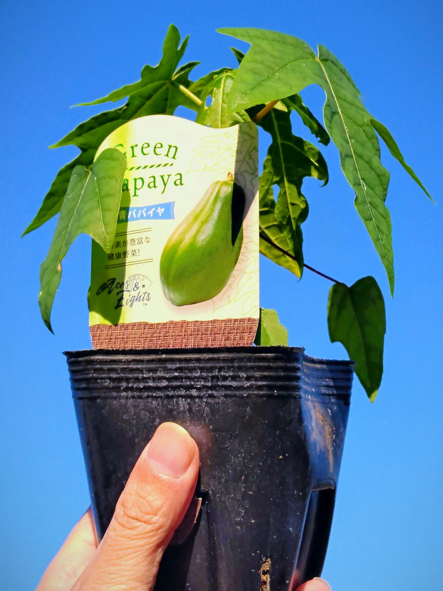
青パパイヤの楽しみ方は色々！露地栽培での野菜収穫や、コンテナ栽培で大型観葉植物を育てるような楽しみ方もあります。
そのいずれでも優れた特性を発揮する品種を探し、本州各地・様々な角度から検証を行い、たどり着いたのがこの品種です。
【品種特性とメリット】
- わい性で節間長が極めて短い
- 栽培期間内での全高が低く抑えられる
- 低温期の徒長を起こしにくい
- 雌性の単為結果性が良好
果実形状は比較的小型で、木が小さい場合でも着果負担が起きにくく収穫に繋がる。1本植えの場合も着果性が良い。
お買い求めは全国のホームセンターにて ▸【従来品との比較試験】 10.5cmポット苗を定植
4月29日定植～7月3日調査（栽培日数67日）／直径30㎝ｘ高さ30㎝不織布POT(培養土25リットル)
管理：無加温ハウス内管理／施肥：元肥(緩効性)／追肥：6月まで固形月1回(有機化成N8:P8:K8)、7月以降月2回(IB化成N10:P10:K10)、液肥週1回(N6:P10:K5/1,000倍)
以前より広く本州で販売されている代表的な品種Aとの比較試験では、Aが生育初期の低温時に節間が伸びやすいのに対し、R²は節間が短く1番花着生位置で10㎝超の差が出る結果となりました。（展開葉枚数は同じ）
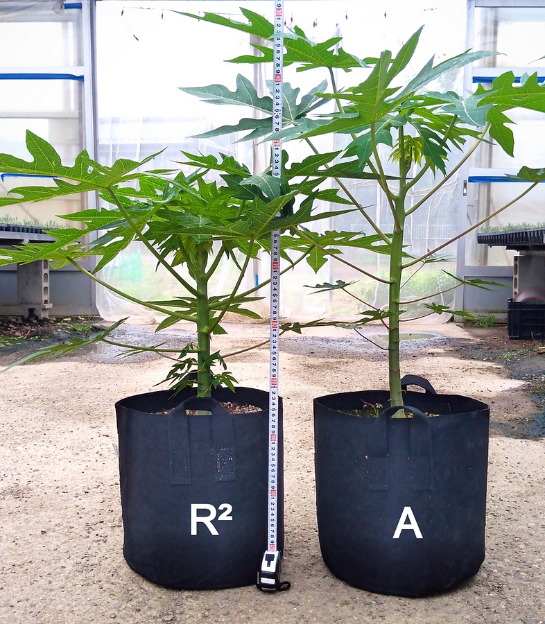
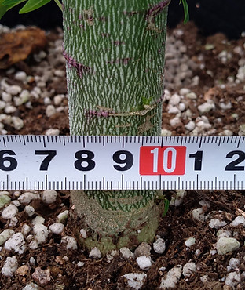
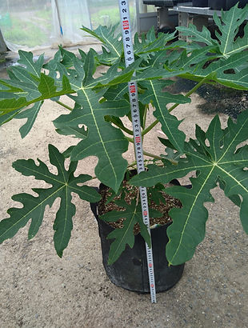
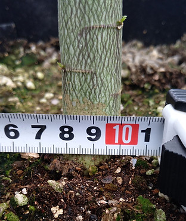
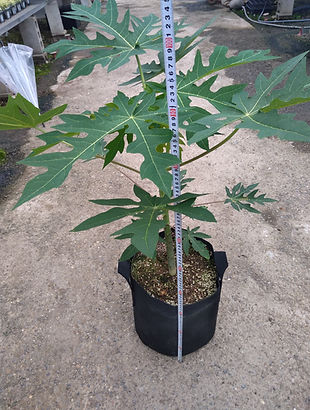
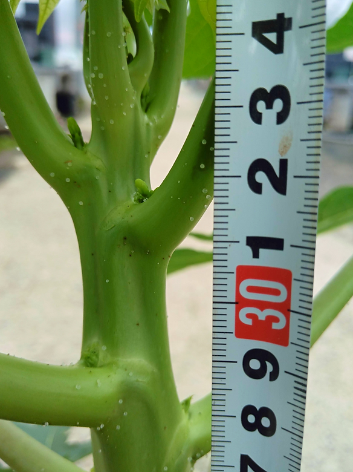
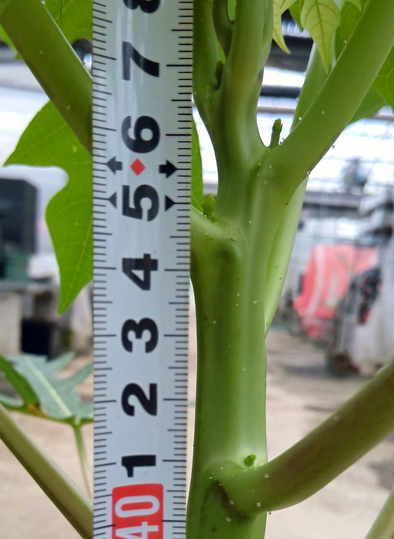
【虫の卵？：温室での栽培で見られる不思議な現象】 画像の花芽周辺に見られる透明の粒は真珠体(Pearl bodies)または樹液体(Sap balls)と呼ばれているもので、急激に成長する初夏、土壌水分が高くハウス内湿度が高い状態では植物の水分蒸散率が低下、体内に拡散圧が発生する、この圧力が真珠体となり水分やミネラルを体外に放出していると考えられる。他の植物で見られる溢液(いつえき)現象に似たようなものとされており無害である。
【R² コンテナ栽培結果】4月29日定植～11月13日調査（栽培日198日）
8月より屋外にて栽培を継続、やや日当たりが悪い位置だったため葉の展開が偏って伸びている。11月平均気温12℃、生育は緩慢になっており果実肥大は望めない為栽培を終了。
- 樹高1.7m、幹径10㎝
- 葉張2.3m、展開枚数45枚
- 収穫果実量：トータル5個(最大400g）
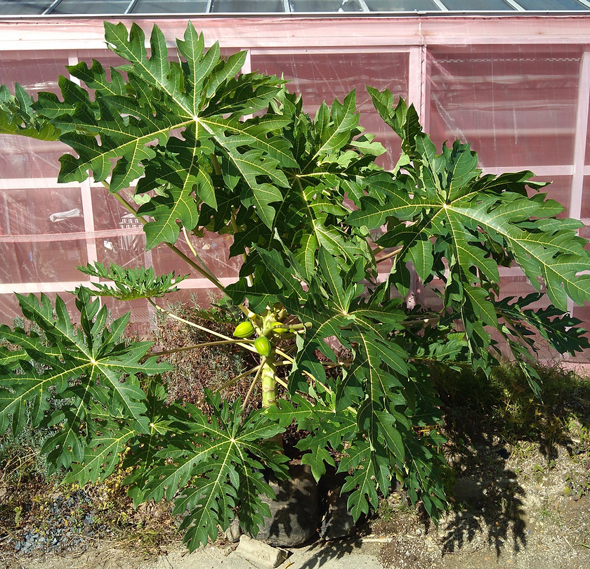
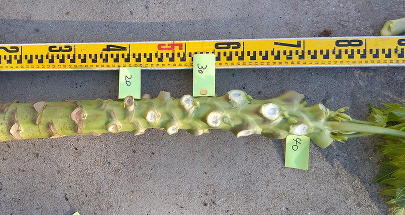
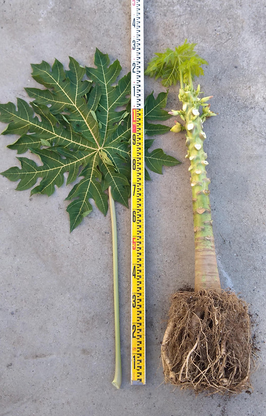
【根や茎の状態】
根は容器いっぱいに広がっている。節間長は全域で約15～20㎝内に10節を数え、コンパクトなR²の特性が良く表れている。もう少し日当たりの良い場所で管理すれば葉柄がここまで伸びることなくコンパクトな樹姿になったと考えられる。
【着花と着果】
花は咲くが着果しないまま小さな蕾で落ちる現象を繰り返すのはコンテナ栽培では仕方なく、果実を肥大させるだけの体力(養分供給)を維持するのは生育後半になる為、この試験でも30節以降が着果肥大節位となった。本格的な野菜収穫を望むなら、直径50㎝以上の果樹用コンテナが望ましい。
【露地栽培での R²】（5月1日定植9月28日調査・雌性株）
最低着果位置は35㎝、果実は低段10節がすべて1㎏以上（本来もう少し早く収穫し上段を肥大させたほうが良い）樹高は最大180㎝で、生長点位置110㎝とコンパクト。営利生産ではやや物足りないが、家庭菜園向きの品種と言えます。
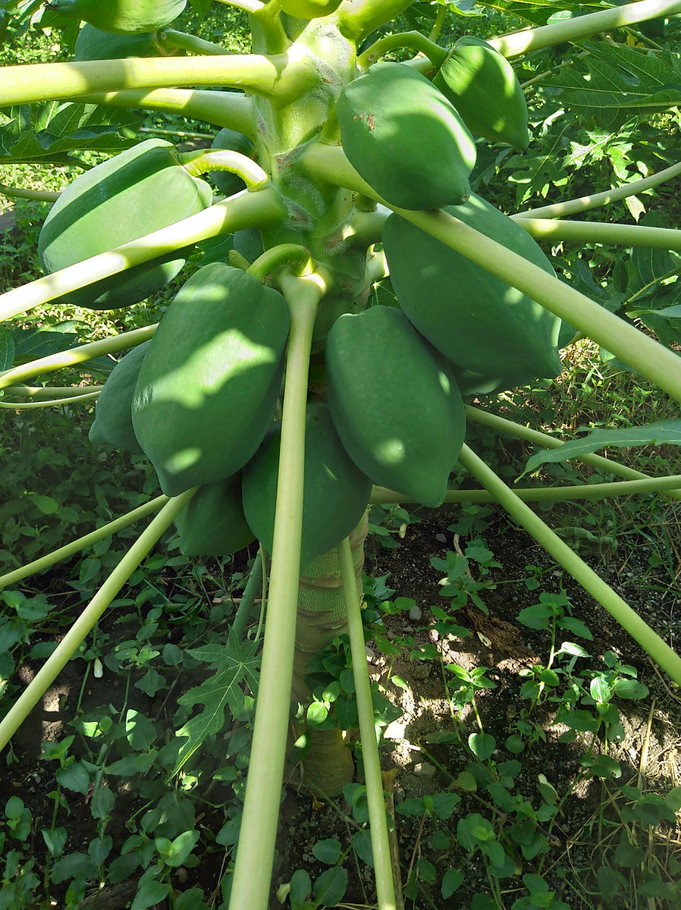
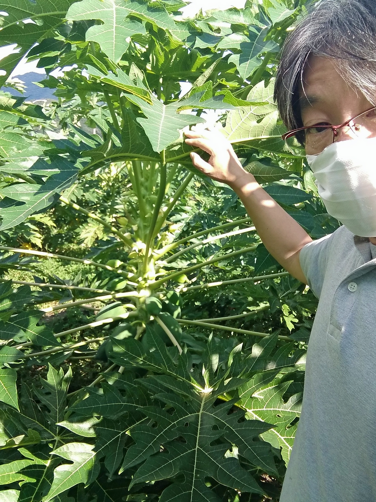
【無農薬有機栽培】
青パパイヤ栽培は有害昆虫の被害がほぼ皆無なことから、無農薬栽培が容易に行えます。反面、短期間で急激に生長するため、たくさんの肥料成分を必要とします。肥料成分が少ないと幹は太らず貧弱な樹姿となり、果実を太らせる力が劣る為収穫も見込めません。有機肥料のみで育てる場合は成分量が低い上に、肥効そのものが土壌条件に影響を受けるためやや難易度が高くなります。
家庭菜園では目的に合った資材を上手く利用します、栽培方法に決まりはありませんので、性質を理解しましょう。

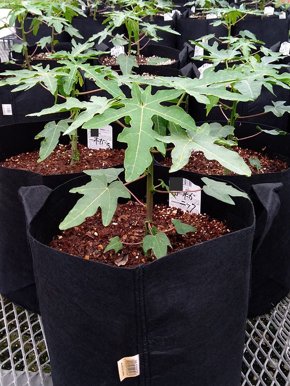
★★コンテナで無農薬有機栽培★★
市販のオーガニック資材や有機認証資材を用いた栽培も可能です。
有機質肥料も幅広く販売されていますので、土の容量に見合った肥料設計を行います。
コンテナ栽培の場合は根の量が制限されるため有機液肥中心に活力剤との併用で肥料切れを防ぎます。
【コンテナ栽培での施肥モデル：最も難易度が低い栽培】
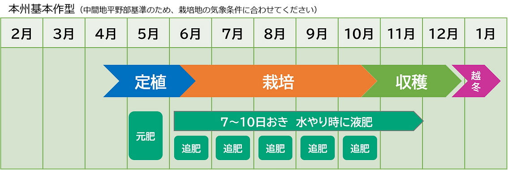
- 植付け時期：4月末～5月初旬
- 容器サイズ：直径30～35㎝
- 苗サイズ：10.5㎝ポット苗
- 栽培地：本州中間地
- 管理場所：屋外
- 植付け時：元肥入りの培養土(花と野菜の土)もしくは培養土にマグァンプＫなど緩効性肥料を施しておきます。容器の底がメッシュ形状でない場合は鉢底石を敷き排水性を良くします。
- 生育初期：5月末までは気温が低く苗自体が動かない為、水やりのみで追肥は不要
- 6月以降：2週間おきに「IB化成」を2握り(40g)、同時に1週間おきに液肥(1,000倍)を与える
これを10月末まで継続します。栽培地が温暖地の場合は11月まで継続します。肥料を分解・吸収するためには水も重要です。特に高温期の7月~9月は肥料同様に水を切らさないように朝晩水やりが欠かせません。
※パパイヤは根の付近に水分が滞留する状態が苦手です、水を張った容器に鉢ごと漬けるような管理方法は木を弱らすのでやめましょう。
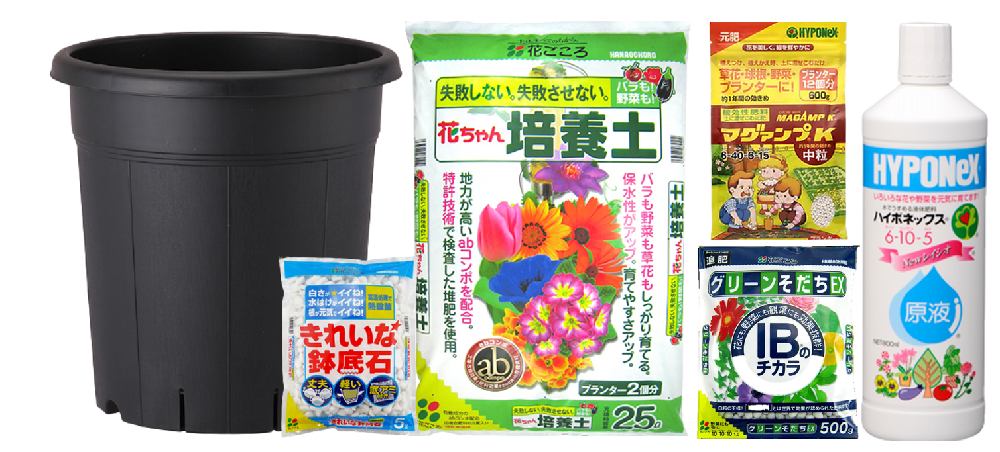